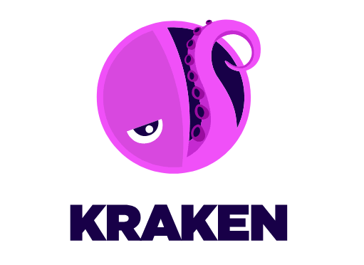
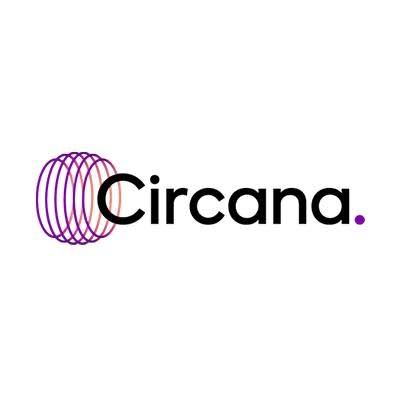
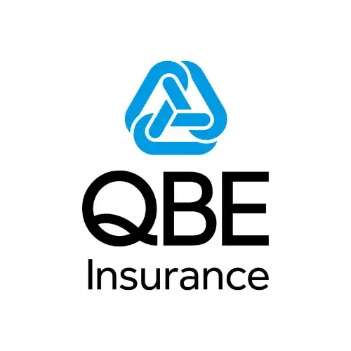
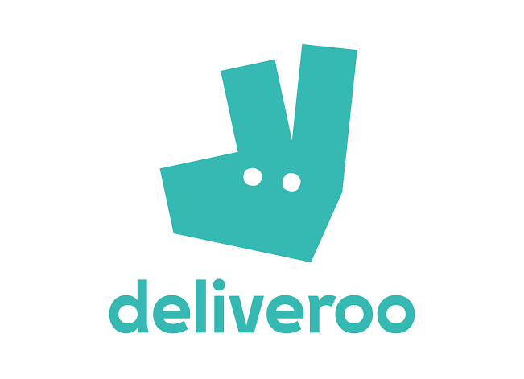

Experience
I've had the opportunity to contribute to software engineering, AI & data projects across multiple industries from finance and insurance to healthcare and energy. You can see some of my journey below!
It all started at 16 with a data science internship at QBE Insurance. Since then I've interned at G-Research, NHS England, JPMorganChase and now Kraken Technologies.
2026 — my placement year! found a love for Software Engineering
- Jun 2026 – Present Software Engineer Intern (AI & ML) Kraken Technologies · Full-time · Hybrid, London
- Apr 2026 Software Engineering Spring Intern JPMorganChase · On-site, London
2025 — 4 internships, 4 different fields
- Aug 2025 Insight Week PDT Partners · On-site, London
- Aug 2025 Technology Work Experience Week Kerv · On-site, London
- Jul – Aug 2025 King's Undergraduate Research Fellow King's College London · Part-time
- Jun – Aug 2025 Data Science and Applied AI Intern NHS England · London
2023 — A year of exploration
- Aug 2023 Summer Work Experience Circana · London
- Jul 2023 Work Experience Week Aon · Greater London
- Jul 2023 Work Experience Week G-Research · Greater London
- Feb 2023 Work Experience Day National Grid · London
2022 — My first taste of tech!
- Jul – Aug 2022 Data Science Summer Intern QBE Insurance · Greater London
- Apr 2022 – Apr 2024 Data Science Mentee Deliveroo · Greater London



